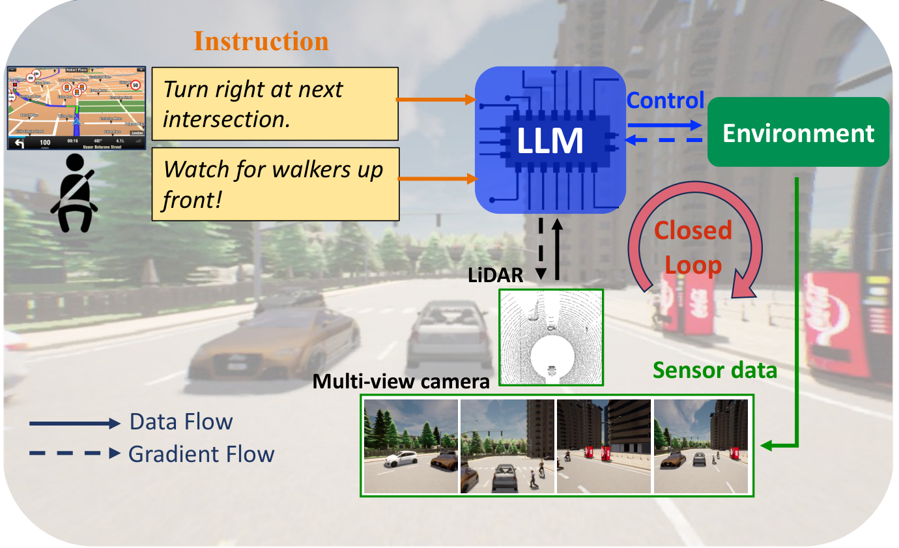
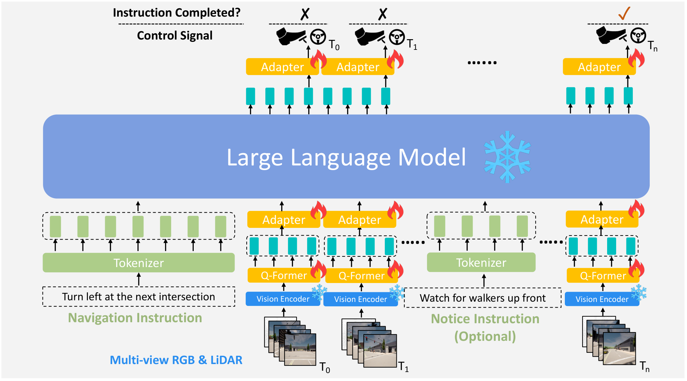
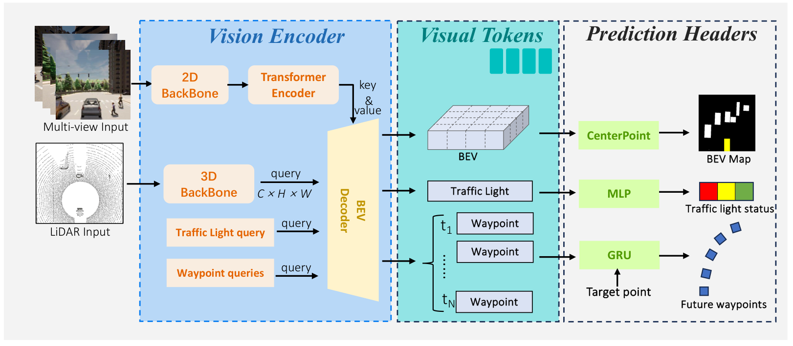
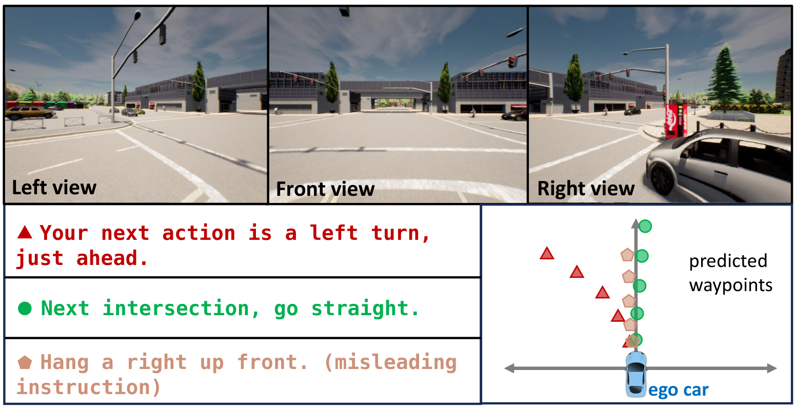
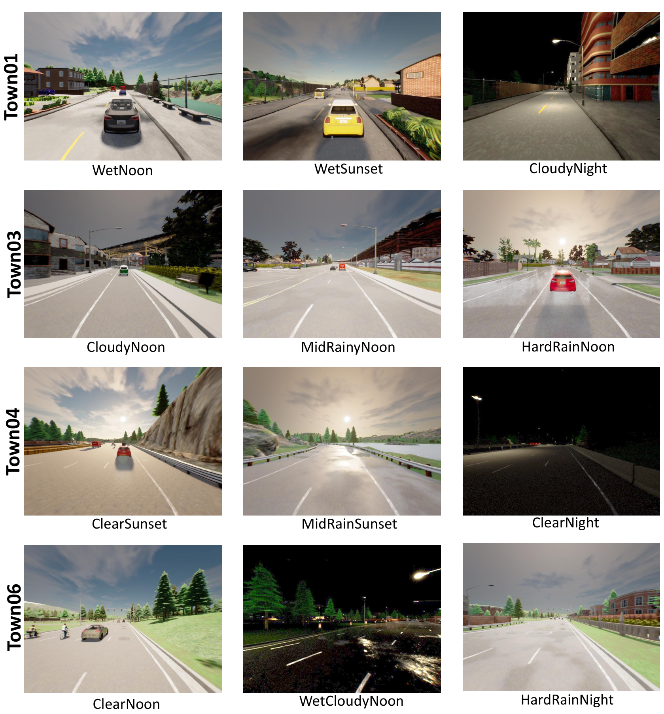

0. 页面头部：论文身份卡片
| 论文 | LMDrive: Closed-Loop End-to-End Driving with Large Language Models |
|---|---|
| 作者 | Shao, Hao；Hu, Yuxuan；Wang, Letian；Waslander, Steven L.；Liu, Yu；Li, Hongsheng |
| 时间 | 2023/12/12 |
| 方向 | VLA / LLM 闭环端到端驾驶 |
| 核心贡献 | LMDrive 将自然语言导航/提醒指令、多视角相机与 LiDAR 观测统一送入视觉编码器、Q-Former 与 LLM 驱动头，直接在 CARLA 闭环环境中输出控制量，从而把“语言可交互”纳入端到端驾驶评测。 |
| 模型类型 | 语言条件闭环端到端驾驶系统；重点不是生成解释，而是让自然语言导航与 notice 指令直接影响 CARLA 中的实时控制。 |
| 输入 | 多视角 RGB、LiDAR/BEV 表示、历史状态、自然语言导航指令与可选 notice。 |
| 中间表示 | 视觉编码器产生场景与 BEV token，Q-Former 将其压缩对齐到 LLM 空间，LLM 隐状态再由动作适配头转换为未来路点和控制。 |
| 输出 | 未来路点及可执行的转向、油门、制动控制；在 CARLA 中滚动闭环执行。 |
| 训练目标 | 视觉预训练阶段联合检测、交通灯状态与未来路点任务；指令微调阶段学习语言条件下的驾驶动作。 |
| 代码与复现状态 | 是，代码、模型和数据集公开；很高：适合作为自动驾驶 VLA 闭环基线和语言指令数据集基线 |
1. 论文速览：用一页讲清楚价值
1.1 一句话贡献
LMDrive 将自然语言导航/提醒指令、多视角相机与 LiDAR 观测统一送入视觉编码器、Q-Former 与 LLM 驱动头，直接在 CARLA 闭环环境中输出控制量，从而把“语言可交互”纳入端到端驾驶评测。
1.2 论文专属关键词
Closed-loop driving、LangAuto、language-guided driving、multi-view sensor fusion、Q-Former、LLaVA/Vicuna/LLaMA、CARLA、instruction following
1.3 技术定位
语言条件闭环端到端驾驶系统；重点不是生成解释，而是让自然语言导航与 notice 指令直接影响 CARLA 中的实时控制。
1.4 论文构建了什么
| 输入 | 多视角 RGB、LiDAR/BEV 表示、历史状态、自然语言导航指令与可选 notice。 |
|---|---|
| 编码与融合 | 视觉编码器产生场景与 BEV token，Q-Former 将其压缩对齐到 LLM 空间，LLM 隐状态再由动作适配头转换为未来路点和控制。 |
| 输出 | 未来路点及可执行的转向、油门、制动控制；在 CARLA 中滚动闭环执行。 |
| 训练目标 | 视觉预训练阶段联合检测、交通灯状态与未来路点任务；指令微调阶段学习语言条件下的驾驶动作。 |
1.5 核心结论与证据链
这篇工作解决的不是单帧问答，而是语言条件下的闭环驾驶：车辆在仿真环境中持续接收传感器观测和导航/notice 指令，模型需要把指令约束、道路状态和动态障碍物整合成低层控制。论文贡献包括 LMDrive 模型、约 64K instruction-following clips 与 464K notice instructions，以及 LangAuto / LangAuto-Notice 基准。论文报告 LLaVA-v1.5 作为语言骨干在 LangAuto 设定中 DS=36.2±2.3、RC=46.5±4.3、IS=0.81±0.03；去掉视觉预训练后 DS 降到 16.9±5.1，说明视觉预训练和跨模态桥接不是装饰模块，而是闭环可驾驶性的关键来源。
核心证据来自：LangAuto / LangAuto-Notice 的 DS、RC、IS 与违规指标；视觉预训练、Q-Former 和 BEV token 消融。。证据边界是：结论主要建立在 CARLA 合成闭环，不能证明真实道路语言交互安全，也未覆盖真实传感器失效。
2. 研究问题与动机：为什么需要这篇论文
2.1 核心问题与成功标准
传统闭环端到端驾驶通常只接受传感器、目标点或离散命令，难以处理“下一路口右转，但注意前方行人”这类人类自然表达。LMDrive 的问题定义把语言从辅助解释升级为行动条件：导航软件和乘客都能以自然语言改变驾驶意图，模型必须在控制闭环中执行，而不是离线生成文本。显而易见的替代路线是把语言先解析成离散 route command 再交给普通 planner，但这样会丢失 notice、风险提醒和人类偏好中的软约束。论文因此将语言 token 和视觉 token 共同进入 LLM 周边结构，让模型在每一帧以历史观测和当前指令共同决定动作。
2.2 现有方法的具体不足
该论文针对的瓶颈不是笼统的“泛化不足”，而是：把语言先解析成有限 route command 会丢失风险提醒、乘客偏好和误导指令中的软约束；纯 LLM 又缺少连续几何与闭环反馈。
2.3 为什么不走显而易见的替代路线
把语言先解析成有限 route command 会丢失风险提醒、乘客偏好和误导指令中的软约束；纯 LLM 又缺少连续几何与闭环反馈。
3. 相关工作脉络：这篇论文从哪里来
3.1 技术家族与直接前作
LMDrive 位于三条线的交叉点：CARLA 闭环端到端驾驶、视觉语言模型指令跟随、语言条件导航。它直接继承 InterFuser/CARLA Leaderboard 一类闭环评价思想，又吸收 LLaVA/LAVIS 中的 Q-Former 跨模态桥接机制。相对 Drive Like a Human、GPT-Driver、Agent-Driver 等偏 open-loop 或语言规划的工作，LMDrive 的新意在于把语言指令接进实时闭环控制，并专门构造 LangAuto 场景来测指令执行、安全和路线完成。
3.2 本文新意属于表示、架构、训练还是评估
从技术地图看，本文的主要新意可概括为：语言条件闭环端到端驾驶系统；重点不是生成解释，而是让自然语言导航与 notice 指令直接影响 CARLA 中的实时控制。。它并非简单替换 backbone，而是围绕输入表示、中间信息流或评价方式重新定义了论文的核心问题。
4. 方法总览图：先看完整信息流
4.1 主框架图与机制

4.2 信息流一句话串联
输入：多视角 RGB、LiDAR/BEV 表示、历史状态、自然语言导航指令与可选 notice。；中间处理：视觉编码器产生场景与 BEV token，Q-Former 将其压缩对齐到 LLM 空间，LLM 隐状态再由动作适配头转换为未来路点和控制。；最终输出：未来路点及可执行的转向、油门、制动控制；在 CARLA 中滚动闭环执行。；训练约束：视觉预训练阶段联合检测、交通灯状态与未来路点任务；指令微调阶段学习语言条件下的驾驶动作。
5. 方法详解：输入、表示、融合、解码、训练与部署
5.1 输入表示
多视角 RGB、LiDAR/BEV 表示、历史状态、自然语言导航指令与可选 notice。。复现时首先要确保各模态的时间同步、坐标系、可见范围与训练时一致；任何一个上游输入偏移都可能被后续大模型放大。
5.2 编码器与融合设计
视觉编码器产生场景与 BEV token，Q-Former 将其压缩对齐到 LLM 空间，LLM 隐状态再由动作适配头转换为未来路点和控制。
5.3 中间表示为何重要
中间表示决定模型保留何种几何、语义和时间信息。该论文的关键中间链路是：视觉编码器产生场景与 BEV token，Q-Former 将其压缩对齐到 LLM 空间，LLM 隐状态再由动作适配头转换为未来路点和控制。。它让最终输出能够利用这些信息，但也把上游表示误差带入规划或预测。
5.4 解码、动作生成或未来预测
未来路点及可执行的转向、油门、制动控制；在 CARLA 中滚动闭环执行。
5.5 训练目标及副作用
视觉预训练阶段联合检测、交通灯状态与未来路点任务；指令微调阶段学习语言条件下的驾驶动作。。这些目标直接约束对应监督输出，却不会自动保证真实闭环安全、跨域鲁棒性或因果可解释性。
5.6 训练阶段与数据风险
模型由视觉编码器、Q-Former、LLM/tokenizer 和动作适配头构成。多视角相机和 LiDAR 首先被视觉编码器转成场景 token；语言指令经 tokenizer 进入 LLM 语义空间；Q-Former 承担视觉到语言空间的压缩与对齐；动作头将 LLM 侧隐状态映射为低层控制。训练分为视觉编码器预训练与 instruction finetuning：前者用原始驾驶数据学习场景理解，后者用指令-轨迹片段学习语言条件控制。推理时模型滚动接收历史传感器序列，压制闭环累计误差。复现时不能只跑单帧预测，必须在 CARLA/LangAuto 中跑 run_evaluation.sh，观察 DS、RC、IS 和各类碰撞/违规指标。
5.7 推理与部署流程
依赖 CARLA 0.9.10.1、ScenarioRunner、Leaderboard、多传感器输入和语言指令；论文没有真实车安全 fallback。
6. 原论文图解：逐图拆解证据含义
7.1 Figure 1：We present LMDrive, the first language-guided closed-loop en
7.2 Figure 4：The structure of the proposed LMDrive model, which consists

7.3 Figure 5：The detailed structure of the vision encoder, which takes as

7.4 Figure 6：An example of how our LMDrive predicts future waypoints, giv

7.5 Figure 7：The visualization of some weather and daylight conditions us

7. 实验与结果：把证据链拆开
7.1 数据集、任务与划分
实验围绕该论文的技术定位组织：语言条件闭环端到端驾驶系统；重点不是生成解释，而是让自然语言导航与 notice 指令直接影响 CARLA 中的实时控制。。需要特别区分离线预测、生成质量、开环规划与真实/仿真闭环，因为它们使用不同成功标准；本论文主要证据为：LangAuto / LangAuto-Notice 的 DS、RC、IS 与违规指标；视觉预训练、Q-Former 和 BEV token 消融。
7.2 Baseline 为什么重要
论文的比较应围绕其技术定位理解：语言条件闭环端到端驾驶系统；重点不是生成解释，而是让自然语言导航与 notice 指令直接影响 CARLA 中的实时控制。。强 baseline 用来判断收益来自新增信息流、模型容量还是评估协议；仅与较弱旧方法比较不足以证明论文主张。
7.3 指标如何对应论文主张
本文实验所依赖的证据为：LangAuto / LangAuto-Notice 的 DS、RC、IS 与违规指标；视觉预训练、Q-Former 和 BEV token 消融。。离线预测误差、生成质量、规划指标或闭环分数各自只衡量部分能力，不能互相替代。
7.4 主结果与机制是否一致
核心实验是 LangAuto 系列闭环评测。论文比较了 LLaMA、LLaMA2、Vicuna、Vicuna-v1.5、LLaVA-v1.5 等语言骨干，并做了 Q-Former、BEV token、视觉预训练消融。Table 2/3 显示 LLaVA-v1.5 在 LangAuto 子设置中最高，去掉 Q-Former、去掉 BEV token 或去掉视觉预训练都会降低 DS/RC/IS，其中视觉预训练下降最大。LangAuto-Notice 进一步测试 misleading 或安全提醒指令下的鲁棒性：系统需要拒绝不安全提示并执行场景约束内的安全动作。证据缺口在于结果主要来自 CARLA 合成闭环，真实车泛化还没有直接验证。
8. 消融、失败案例与证据缺口
8.1 消融实验应回答什么
最关键的消融需要隔离该论文的核心信息流：LangAuto / LangAuto-Notice 的 DS、RC、IS 与违规指标；视觉预训练、Q-Former 和 BEV token 消融。。如果去掉核心模块后只在部分指标下降，需要进一步判断收益是否集中于特定场景。
8.2 失败案例与证据缺口
结论主要建立在 CARLA 合成闭环，不能证明真实道路语言交互安全，也未覆盖真实传感器失效。
8.3 论文没有证明什么
现有结果不能直接推出：结论主要建立在 CARLA 合成闭环，不能证明真实道路语言交互安全，也未覆盖真实传感器失效。
9. 复现要点：真正动手会遇到什么
9.1 最小可行复现路线
最小复现路径是：安装 CARLA 0.9.10.1 与项目 environment.yml，下载作者发布的模型与 LangAuto 数据，设置 SCENARIOS 和 ROUTES 后运行 leaderboard/scripts/run_evaluation.sh。若显存或时间有限，先跑 LangAuto-Tiny / Short；完整长路线评测需要稳定 CARLA 服务和较长仿真时间。阻塞点包括 CARLA 版本、ScenarioRunner/Leaderboard 兼容性、模型权重下载、LiDAR/多视角输入预处理。验收标准不是 loss，而是 DS、RC、IS 以及碰撞/红灯/越界等闭环指标能复现论文趋势。
9.2 数据、模型、硬件与阻塞点
数据与接口重点：多视角 RGB、LiDAR/BEV 表示、历史状态、自然语言导航指令与可选 notice。。模型重点：视觉编码器产生场景与 BEV token，Q-Former 将其压缩对齐到 LLM 空间，LLM 隐状态再由动作适配头转换为未来路点和控制。。部署重点：依赖 CARLA 0.9.10.1、ScenarioRunner、Leaderboard、多传感器输入和语言指令；论文没有真实车安全 fallback。。论文未明确披露的硬件与训练成本不在此推测。
9.3 验收标准
复现成功不应只以脚本运行结束为标准，而应至少复现论文核心趋势：LangAuto / LangAuto-Notice 的 DS、RC、IS 与违规指标；视觉预训练、Q-Former 和 BEV token 消融。；同时检查输出是否在论文声称的边界外快速退化。
10. 分析、局限与边界：作者没说完的部分
10.1 最有价值贡献
最有价值的地方是把“语言可交互”变成闭环控制问题，而不是把 VLM 当解释头。论文证据能支持“语言骨干与跨模态桥接有用”，但不能证明 LLM 已掌握真实世界驾驶常识；CARLA 中的长尾和真实道路的社会交互仍有鸿沟。可改进方向包括接入更强 temporal memory、用真实驾驶视频做 sim2real 对齐、将 notice 指令和安全约束显式转为 verifier，并用世界模型在闭环前模拟多种后果。
10.2 主张—证据—充分性
| 论文主张 | 语言条件闭环端到端驾驶系统；重点不是生成解释，而是让自然语言导航与 notice 指令直接影响 CARLA 中的实时控制。 |
|---|---|
| 支撑证据 | LangAuto / LangAuto-Notice 的 DS、RC、IS 与违规指标；视觉预训练、Q-Former 和 BEV token 消融。 |
| 充分性判断 | 对论文评测范围内的机制结论较有支持；对真实闭环、跨域或安全泛化仍不足。 |
| 原因 | 结论主要建立在 CARLA 合成闭环，不能证明真实道路语言交互安全，也未覆盖真实传感器失效。 |
10.3 可行改进方向
将 notice 转成显式安全约束；用世界模型先 rollout 指令后果；加入真实驾驶视频对齐与安全 critic。
10.4 后续实验建议
| 核心模块去除/替换 | 隔离论文主张，观察核心指标是否按预期下降 |
|---|---|
| 跨域或扰动测试 | 检查方法是否依赖训练分布和干净输入 |
| 闭环 rollout | 观察误差累积、碰撞与恢复 |
| 不确定性/安全验证 | 识别高风险预测并建立 fallback |
11. 组会问答准备
Q: 为什么 LMDrive 不是简单把导航命令翻译成 route command？
A: 因为 LangAuto 包含自然语言导航、notice 和误导/安全相关表达，模型需要在闭环中共同考虑传感器状态和指令，而不是离线解析一个离散动作。
Q: Q-Former 的作用是什么？
A: 它压缩并对齐视觉/BEV token 到 LLM 可使用的语义空间；消融中去掉 Q-Former 会降低 DS 和 RC。
Q: 最关键的实验指标是什么？
A: Driving Score、Route Completion、Infraction Score 及碰撞/红灯/越界细分指标，因为这些反映闭环安全与任务完成，而非单步轨迹误差。
Q: 论文最大边界在哪里？
A: 实验主要在 CARLA/LangAuto，真实道路传感器噪声、地图差异和交互行为没有被充分覆盖。
Q: 复现优先跑什么？
A: 先跑作者 tiny/short 路线确认环境，再跑 LLaVA-v1.5 基线与 w/o visual pre-training 消融，验证模块趋势。
12. 我的阅读笔记：转成自己的研究素材
12.1 最值得借鉴的点
可以把 LMDrive 作为“语言闭环驾驶”的基础表格项；后续创新可接入世界模型作为 safety rollout verifier，或者把 notice 指令转成可验证约束，减少 LLM 幻觉直接影响控制。
12.2 与同目录论文的比较钩子
可从“语言是否直接影响动作、是否显式预测未来世界、是否真实闭环、是否保留 3D 几何、是否使用 agent/tool/memory”五条轴与同目录论文比较。本文的定位为：语言条件闭环端到端驾驶系统；重点不是生成解释，而是让自然语言导航与 notice 指令直接影响 CARLA 中的实时控制。
12.3 可行动创新点
将 notice 转成显式安全约束；用世界模型先 rollout 指令后果；加入真实驾驶视频对齐与安全 critic。
13. 附录图解与证据索引
本文使用的原始图件均来自 arXiv 源码，图注保留或准确转述。其他附录图未被机械堆入页面；只有能够解释方法、结果、消融或失败的图件才被选择。